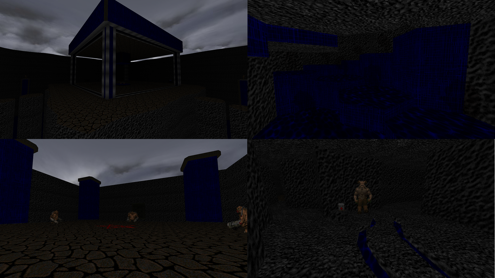

DOWNLOAD LINKS



| Year | 2014 |
| IWAD | Doom II |
| Source port | ZDoom |
| Game mode(s) | Single-player |
| Map(s) | MAP01-03 |
The Stars of Styx is a 3-level mapset for none other than my source port of choice, ZDoom. The aesthetic in this mapset is predominantly a combination of blue and gray, and the levels contain a lot of glowing things. And I mean a lot of glowing things.
The structure of the levels here is, for lack of a better word, pseudo-non-linear, meaning that progression is very highly controlled and there’s often only one way from point A to point B. Gameplay is mostly rather slow-paced, but things do get a little more hectic in a couple of areas. This wad also features an original soundtrack composed by Yours Truly.